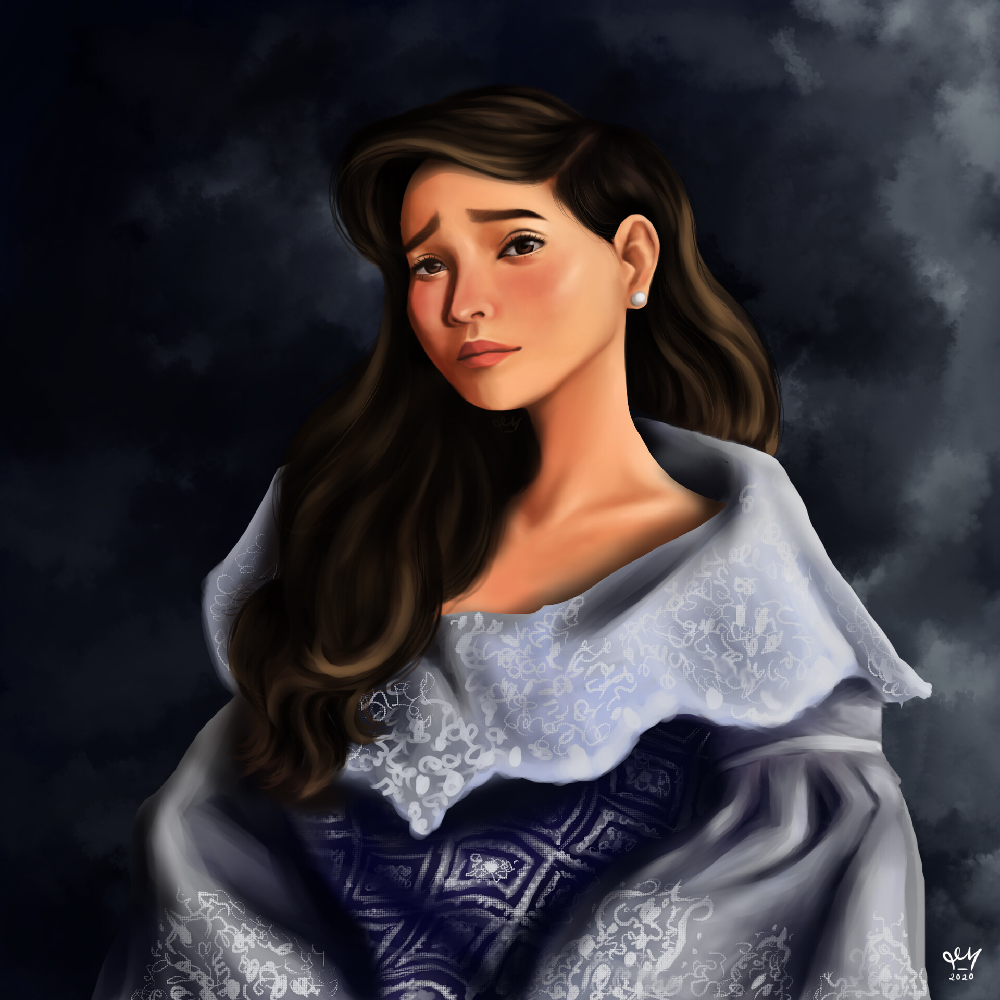
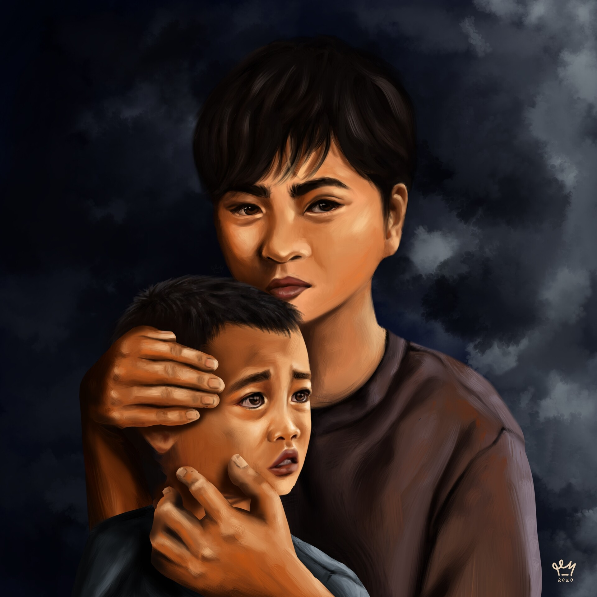
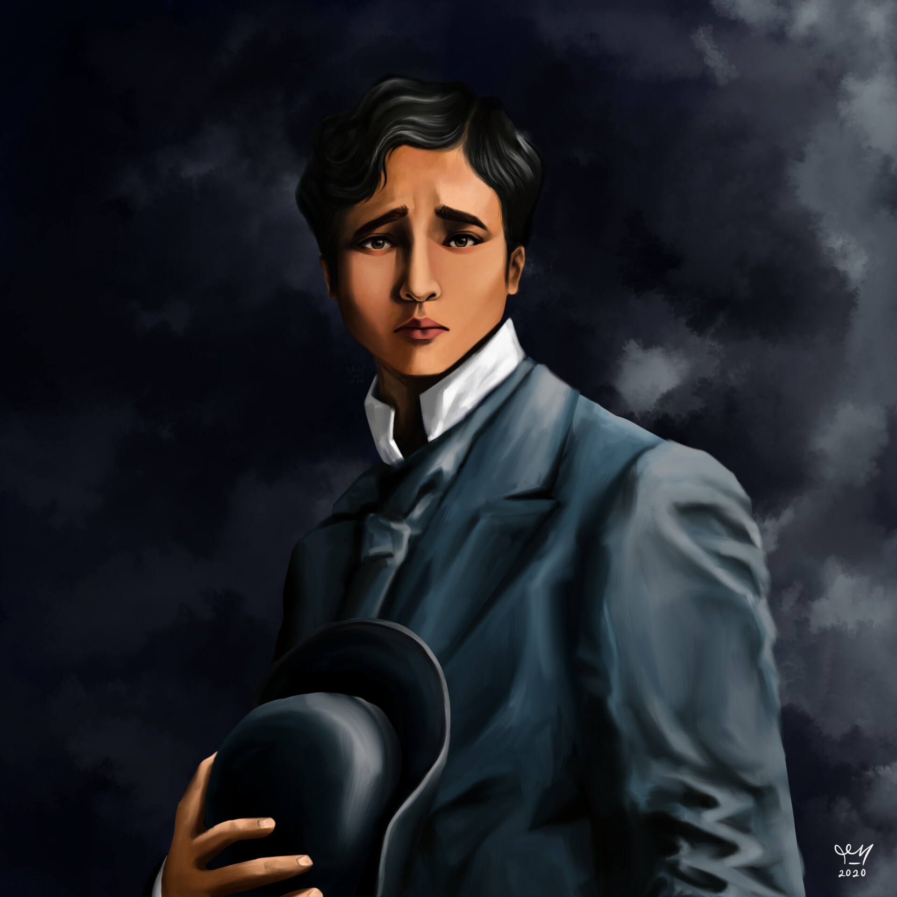

Maria Clara |
 | Kasintahan ni Crisostomo Ibarra na mula sa San Diego. |
Sisa |
Ang ina ni Basilio at Crispin na mapagmahal,sa kahulihan, nabaliw ito. | |
Basilio |
 | Ang panganay na anak ni Sisa, siya ay inosente. |
Padre Damaso |
||
Crisostomo Ibarra |
 |